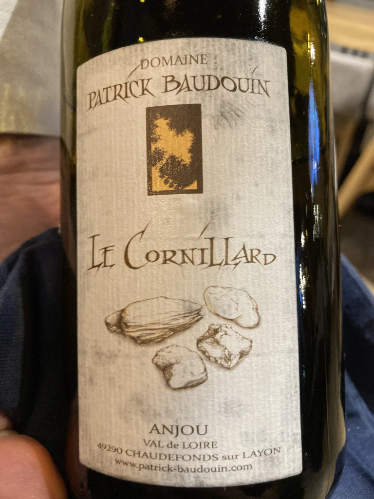

- Type
- White Still, Dry
- Producer
- Domaine Patrick Baudouin
- Vintage
- 2014
- Location
- France, Anjou AOC
- Grapes
- Chenin Blanc
- Alcohol
- 14
- Sugar
- NA
- Price
- 2200 UAH
- Cellar
- N/A
Powerful and racy terroir Chenin which takes root on a schistose hillside plunging towards the Layon and facing south-east. A plot that demonstrates the potential of the “great dry whites” of the Layon terroirs.
Ratings
2021-10-17 - 8.50
Wonderful 7-years old Chenin Blanc. Intense and sophisticated nose that evolves during the evening. It bursts with baked apple and sea salt, but then slowly opens with tilia, benzene and lemon. Fresh, almost perfectly balanced, well structured, flavourful with long aftertaste. Delicious discovery. Relatively small production - 1900 bottles. Aged in Burgundy barrels.